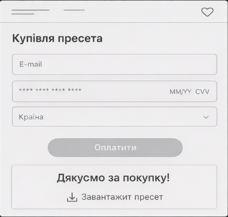

Проєктування взаємодії
Тут описаний шлях користувача від вибору пресета до покупки та підключені wireframes зі Figma.
User Flow
Відкрий як схему або встав картинку зі Figma
- Каталог → вибір пресета за тегами/ціною
- Сторінка пресета → перегляд “До/Після” + опис/сумісність
- Checkout → введення email + оплата (демо) → підтвердження
- Завантаження → отримання файлу пресета (.zip) та інструкції
Порада: у звіті додай “точки ризику” (де користувач може піти) і як дизайн це зменшує:
наприклад, невпевненість у результаті → slider “До/Після”.
Wireframes (Figma)
Wireframes (за бажанням)
Екран 1: Preset page
Скелет: фото/slider, кнопки пресетів, CTA “Купити”.
Wireframe

Екран 2: Checkout
Скелет: мінімум полів, підказки, підтвердження.
Wireframe

Обґрунтування
- Скелетні схеми пришвидшують перевірку логіки без “красивостей”.
- Slider у фокусі — ключовий доказ якості (до/після).
- Checkout мінімалістичний → зменшення когнітивного навантаження.